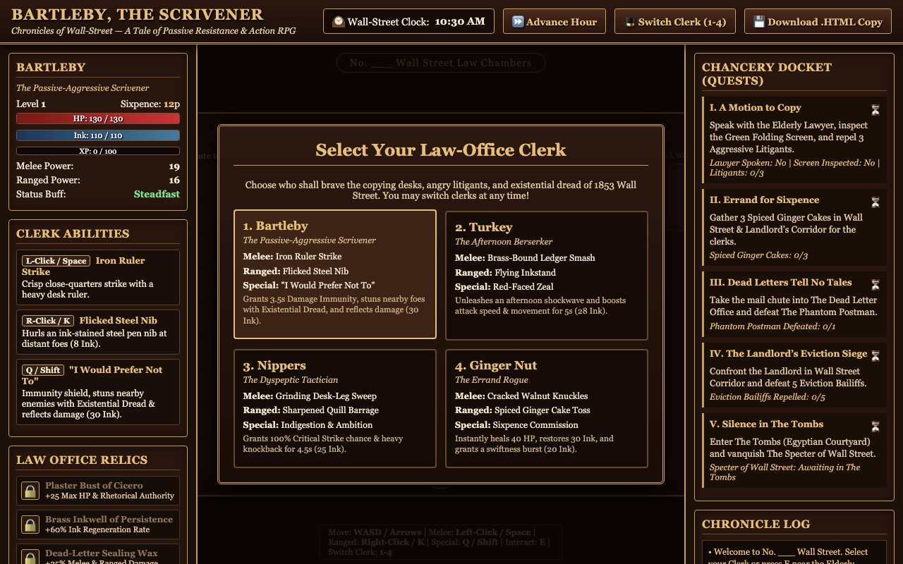
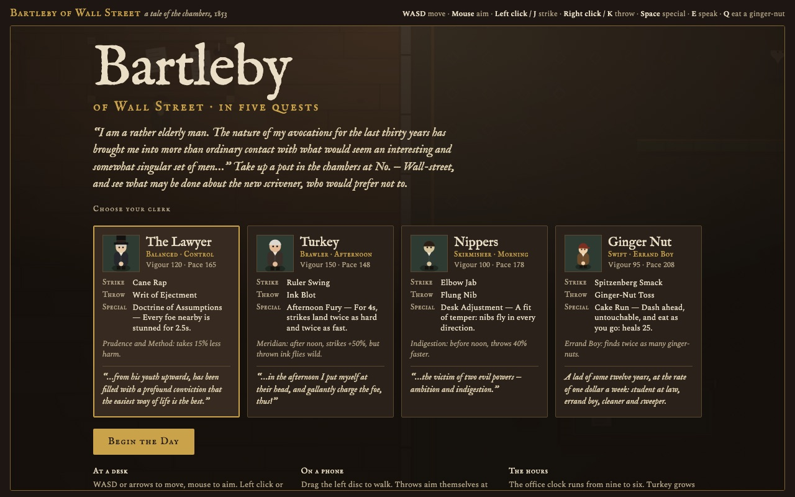
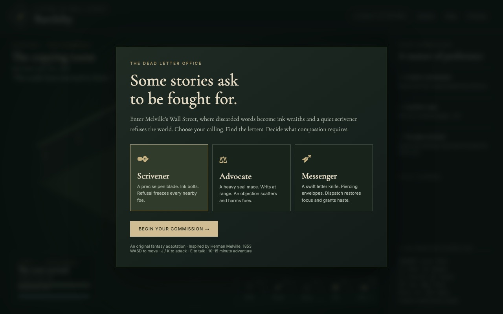

Argon
Bartleby, the Scrivener: Chronicles of Wall-Street
Four switchable clerks, a five-quest Chancery Docket, collectible relics and a Wall Street clock you can advance by the hour.
Bartleby Bench
Three AI models were given the same one-line prompt. Each built a game in a single HTML file. Every entry below is the model's output, unedited. Pick one and play.
“Create a playable web-based rpg with melee and ranged attacks, character classes, and quests, all based on the classic tale of Bartleby the Scrivener”

Argon
Four switchable clerks, a five-quest Chancery Docket, collectible relics and a Wall Street clock you can advance by the hour.

Opus 5.5
Play as the Lawyer, Turkey, Nippers or Ginger Nut across five quests in the chambers, with an office clock that changes who is useful when.

Sol 6.1
Scrivener, Advocate or Messenger across three chapters, from the Chambers to the Tombs, with a boss and two endings.